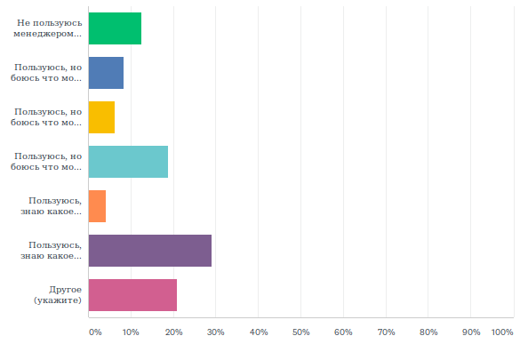
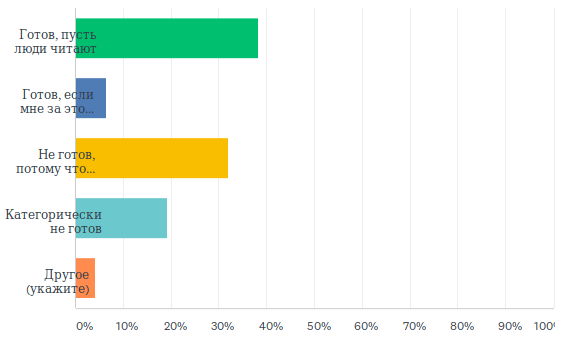

Всю прошедшую неделю на сайте WebHamster.ru проводился опрос посетителей о том, как они организовывают хранение своей личной и рабочей информации, и пользуются ли они менеджерами заметок (PIM-менеджерами). Опрос специально проводился без прицела на целевую аудиторию разрабатываемого мною PIM-менеджера MyTetra. Поэтому информация об опросе не размещалась на таких сайтах как linux.org.ru или habr.ru, чтобы в статистике было видно мнение казуальной части аудитории.
Я планировал, что в опросе будет участвовать максимальное число из доступного количества респондентов, а именно 100 человек (такое ограничение на бесплатном тарифе сайта SurveyMonkey.com). По факту было опрошена только половина (48 человек), потому что об опросе, как я писал выше, я нигде не сообщал, и была только новость на главной странице сайта. Дожидаться опроса 100 человек нет никакого смысла, потому что на процентное распределение в вариантах ответов большее количество опрашиваемых практически не повлияет.
Далее приводятся результаты опроса с моими комментариями.
1. Знаете ли вы, что такое менеджер заметок (PIM-менеджер) ?
|
Да |
79,17% 38 |
|
Нет |
6,25% 3 |
|
Нет уверености |
14,58% 7 |
|
ВСЕГО |
48 |
Этот вопрос должен был помочь понять, какая аудитория участвует в опросе. 20% не знающих и не уверенных показывает, что в опросе приняло участие достаточно большое количество неангажированной публики. Другими словами, я больше всего боялся, что в опросе примут участие только пользователи менеджера накопления информации MyTetra, которые приходят на этот сайт за новостями о развитии данного PIM-менеджера. И то, что получилось такое количество людей "не в теме", позволяет утверждать, что опрос получился достаточно независимым от "профессионалов". Хотя полностью исключить перекос в сторону пользователей MyTetra и других PIM-менеджеров не удалось, о чем будет сказано ниже.
2. Как вы храните личные записи, телефоны, контакты, копии документов, постоянно используемую документацию и прочее?

|
Предпочтительно в бумажном виде: бумажная записная книжка, бумажные ксерокопии, бумажная документация |
2,13% 1 |
|
Всего по-немногу. Контакты и телефоны в мобильном телефоне, копии документов на компьютере и на бумаге, документация в виде бумажных книг и файлов |
46,81% 22 |
|
Предпочтительно в сотовом телефоне, пользуюсь теми стандартными средствами, которые есть в телефоне |
2,13% 1 |
|
Предпочтительно на компьютере в виде текстовых файлов, файлов изображений и т. д. |
21,28% 10 |
|
Пользуюсь менеджером заметок |
21,28% 10 |
|
Другое (укажите) |
6,38% 3 |
|
ВСЕГО |
47 (1 skipped) |
Ответы "Другое":
Здесь видно, что почти половина опрошенных никак не озабочена систематизацией хранения данных (вариант "Всего понемногу"). У них данные разбросаны по устройствам и по бумажкам. Удивил здесь достаточно большой процент людей, которые пользуются менеджерами заметок. Более 20% сознательных - это очень много, и тут, видимо, все-таки сыграла свою роль целевая аудитория сайта WebHamster.ru.
3. О каких менеджерах заметок вы знаете? (Знаете название, и как минимум, видели его интерфейс хотя бы на скриншотах)

|
Evernote |
90,00% 36 |
|
– Microsoft OneNote |
70,00% 28 |
|
– Google Keep |
55,00% 22 |
|
– Zim |
30,00% 12 |
|
– CherryTree |
50,00% 20 |
|
– OutWiker |
25,00% 10 |
|
– MyTetra |
82,50% 33 |
|
– KeepNote |
25,00% 10 |
|
– Mars Notebook |
15,00% 6 |
|
– DokuWiki, MediaWiki, прочие wiki-движки |
40,00% 16 |
|
Всего респондентов: |
40 (8 skipped) |
Ответы "Другое":
Данное распределение показывает осведомленность людей о различных PIM-менеджерах. Естественно, что MyTetra не может быть более известна, чем Microsoft OutNote. На этот вариант просто повлияла целевая аудитория сайта. Но остальное распределение, я считаю, правильное. И оно показывает, что лидируют три проприетарных решения, а стан Open Source находится на вторых позициях.
4. Если вы пользуетесь менеджером заметок, есть ли у вас к нему доверие?

|
Не пользуюсь менеджером заметок |
12,50% 6 |
|
Пользуюсь, но боюсь что мои личные данные могут быть доступны сотрудникам компании-разработчика |
8,33% 4 |
|
Пользуюсь, но боюсь что мои личные данные могут быть доступны сотрудникам компании-разработчика и спецслужбам |
6,25% 3 |
|
Пользуюсь, но боюсь что мои личные данные могут быть доступны сотрудникам компании-разработчика, спецслужбам и хакерам |
18,75% 9 |
|
Пользуюсь, знаю какое шифрование используется в моем менеджере, и поэтому боюсь утечки моих личных данных |
4,17% 2 |
|
Пользуюсь, знаю какое шифрование используется в моем менеджере, и поэтому не боюсь утечки моих личных данных |
29,17% 14 |
|
Другое (укажите) |
20,83% 10 |
|
ВСЕГО |
48 |
Ответы "Другое":
Отвечая на этот вопрос, респонденты, видимо подсознательно, отвечали на вопрос, что бы их больше всего беспокоило с точки зрения безопасности. При этом реальными пользователями PIM-менеджеров они не являются. Потому что если всего 12% написали, что не пользуются менеджером, то значит, оставшиеся 88% - пользуются?
В любом случае, здесь радует то, что пользователи (видимо, в большинстве своем, пользователи проприетарных решений), прекрасно отдают себе отчет, что их информация защищена только формально, и может стать добычей любого рода заинтересованных лиц. Но удивительно другое - наибольшее число респондентов не боится утечки своих данных, утверждая что знает какое шифрование используется. Здесь я могу только предположить, что в этом пункте отметились любители OpenSource решений, которые пользуются либо встроенным шифрованием данных (как в MyTetra), либо шифрованием диска.
Общий тон ответов говорит о том, что многие пользователи считают свои данные несущественными, и поэтому утечка личных данных их не сильно волнует.
5. Боитесь ли вы, что в какой-то момент ваши данные в менеджере заметок исчезнут или будут заблокированы по какой-либо причине (технические проблемы, неуплата, завершение поддержки и разработки)?

|
Не пользуюсь менеджером заметок |
10,42% 5 |
|
Не боюсь, данные хранятся локально на компьютере и у меня есть бекапы |
58,33% 28 |
|
Боюсь, потому что в менеджере иногда неправильно сохраняются или исчезают данные (преобладают технические проблемы) |
16,67% 8 |
|
Боюсь, потому что производитель ПО может в любой момент прекратить разработку, а мои данные хранятся в неизвестном (закрытом) формате |
18,75% 9 |
|
Боюсь, потому что мой менеджер заметок хранит все в онлайне, а доступ в интернет может быть в любой момент перекрыт провайдером, правительством |
14,58% 7 |
|
Боюсь, потому что за доступ к аккаунту менеджера заметок приходится платить, и может случиться так, что у меня не будет на это средств |
8,33% 4 |
|
Другое (укажите) |
10,42% 5 |
|
ВСЕГО |
48 |
Ответы "Другое":
Этот вопрос был сделан для того, чтобы выяснить опасения и претензии пользователей к технической стороне менеджеров заметок. Выяснилось, что пользователи достаточно параноидальны, и больше половины имеют бекапы своей информации. Боязнь, что производитель ПО может в любой момент прекратить разработку а данные хранятся в неизвестном (закрытом) формате присутсвет у большенства пользователей PIM-менеджеров, видимо они пользуются проприетарными решениями.
6. Готовы ли вы сделать общедоступными и опубликовать часть своих заметок, не относящиеся к личным данным? Например, статьи, рецепты, результаты разбирательства по сложному техническому вопросу, списки рекомендаций и прочее?

|
Готов, пусть люди читают |
38,30% 18 |
|
Готов, если мне за это будет материальное или иное вознаграждение (баллы, лайки, бесплатное предоставление аккаунта на определенное время, прочее) |
6,38% 3 |
|
Не готов, потому что боюсь ошибиться и случайно опубликовать свою или чужую личную информацию |
31,91% 15 |
|
Категорически не готов |
19,15% 9 |
|
Другое (укажите) |
4,26% 2 |
|
ВСЕГО |
47 (1 skipped) |
Ответы "Другое":
Больше трети респондентов готовы делиться своей (неличной) информацией со всеми желающими, и это, по моим понятиям, хорошо. Треть респондентов осторожничают, и невозможно упрекать их в том, что они не выставляют информацию не потому что не хотят, а потому что боятся в какой-то момент ошибиться и сделать приватную информацию общедоступной.